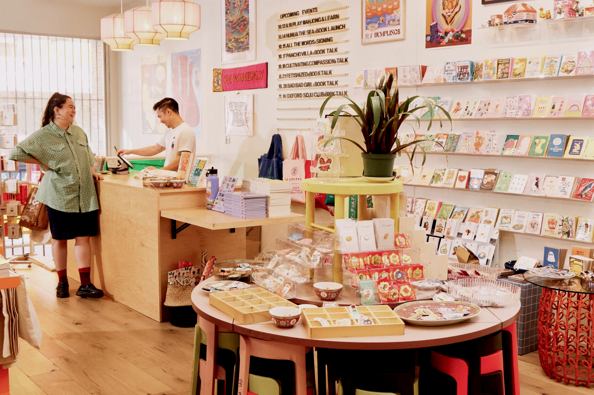
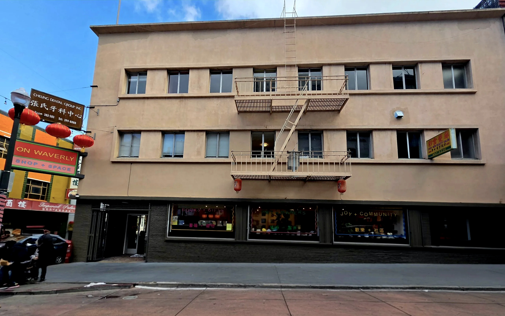
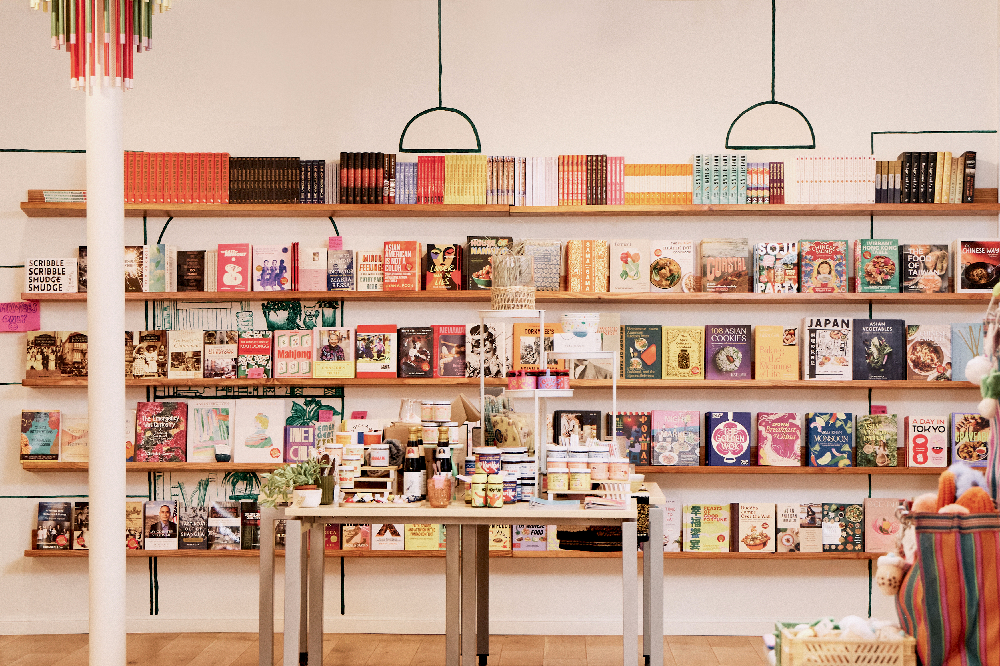

On Waverly: The Next Generation of San Francisco’s Chinatown.
A quick two-block walk from the Chinatown-Rose Pak Muni Station, at the corner of Waverly Place, is On Waverly — a gift shop, bookstore, and community space in San Francisco’s Chinatown that highlights Asian American, Pacific Islander, and Native Hawaiian creators. The location is situated intuitively between Grant Avenue, lined with tourist shops filled with “I Love SF” T-shirts and tchotchkes, and Stockton Street, where many Chinatown residents shop daily for fresh groceries.
The store itself is stocked with curated artwork, a glorious amount of crisp chili oil options, stickers, gifts, and a massive book selection that highlights Asian American and Pacific Islander authors. The books range from cookbooks to mental health topics to children’s books that teach about dim sum, to name just a few. They fill the walls of one side of the store and continue onto massive tables.

But there’s more to the store than what you see when you first walk in. The store is founded on the owners’ background in community development and their vision for a tight-knit community space, as well as the history and culture of Chinatown.
Born and raised what is called the “East Bay” of the San Francisco Bay Area, Cynthia Huie and her sister Jennifer are the co-owners of On Waverly. Cynthia recalls memories of growing up and hearing stories from her dad and grandparents.“My dad always had a very strong voice, at least around the dining table, about injustice,” she remembers. “[Having grown] up in Oakland’s Chinatown in the ’60s and going to Oakland Tech, he experienced a lot of racism, and I think that left a real mark on him.” At dinner, the sisters also often heard from their grandfather, who had come to the United States in the 1930s, and their grandmother, who had left China and immigrated later in life. “I had all these perspectives around the dining table. Every night you get the same but different story, so that sets this tone in my mind, in terms of the tough things that happen in life,” Cynthia shares.
In high school, Cynthia was in a more diverse environment, gravitating toward the Filipino community, which was the predominant Asian ethnic group. “That was the beginning of how I identified [as an Asian American and as a leader],” she says. “I started learning more about the Filipino American experience and what it meant to be Asian.” Surrounded by stories of her family’s past and immersing herself in other Asian cultures in school helped develop her sense of what it meant to be Asian American. This perspective carried over to her freshman year of college at University of California, Santa Barbara. Cynthia stumbled upon a course on Asian Americans and mental health. What started as an elective class transformed her understanding of her family’s generational trauma and led her to pursue a degree in Asian American studies. The class helped Cynthia connect the past struggles of her family to how they shaped who they were as people. She understood that generational trauma would have a lasting impact on the way her family members made choices, and this trauma didn’t just affect her family but all immigrant families.

“It wasn’t named trauma at the time, but it all started to make sense to me that it wasn’t just my dinner table that sounded this depressing. It was dinner tables everywhere — it was a shared experience, a collective experience, and I did not realize it,” she says. “It sounds naive now, but at that time, these conversations about mental health were not being had; there just wasn’t this understanding. And I think for me to understand [that] historical context creates a huge impact in people’s lives was such an eye-opening thing that I just wanted to keep studying it.”A deep understanding of her own family’s trauma, combined with the lessons she had learned in college, would eventually lay the foundations for Cynthia’s interest in creating a community space in Chinatown.
After college, Cynthia quickly realized sitting behind a computer screen was not the life she wanted, and eventually found herself in something she remembered loving — the small business retail space. “I really enjoy seeing the big picture and why we’re doing something and figuring out how I can get that thing to work,” she describes. “I thought about my happiest moments, and I really enjoyed working retail when I was in high school.”
While living in Los Angeles, Cynthia helped build the inventory and sales at a surf shop in Redondo Beach, California. Later, she and her husband moved back to the Bay Area to assist with her father-in-law’s oral surgery practice. It was a different scene from fashion retail, but she embraced the challenges. When Cynthia was asked by her sister Jennifer what she wanted to do next, that conversation initiated a spark that would eventually lead to their first retail space. The Huie sisters opened their first fashion retail shop, Seedstore, on Clement Street, in the heart of San Francisco’s Richmond district, known for its multicultural community. While working in the Richmond neighborhood, Cynthia spearheaded the Clement Street Merchant Association and eventually became its president. The association helped the neighborhood thrive by bringing in a farmers market, murals, and parklets. Her successful involvement in the Clement Street Merchant Association led to her becoming president of the Small Business Association in San Francisco. After almost a decade of running Seedstore, the sisters closed the store in February 2020 for personal reasons and took a break. During the pandemic shutdown, Cynthia remained in her role with the Small Business Association and was dedicated to helping small businesses survive.

In January 2020, as reports of COVID-19 began to trickle into the news, eventually leading to a rise in anti-Asian sentiments, foot traffic in San Francisco’s Chinatown significantly dropped. Even before shelter-in-place mandates began, Chinatown community associations and other community members were concerned that younger generations were not interested in visiting the neighborhood. “I had been in conversations with different elders in our community in Chinatown who had seen the things that I had done on Clement Street and knew my shop that I had built. They asked me what I see for the future of Chinatown,” Cynthia recalls. “I think they were also concerned that the younger generations weren’t coming into the neighborhood. Chinatown is still a gateway for many immigrant families. But immigration waves have changed, so it’s all these different forces — [so] how do we see this neighborhood moving forward?”
Cynthia joined the board of the Chinatown Community Development Center, connecting with people who could engage in conversations with businesses and organizations in Chinatown about their needs and their desired improvements for the neighborhood. “These are people that I’ve revered, especially being an Asian American studies major,” she expresses. “The gravity that this neighborhood and community holds is so great that I’m happy to serve.” Through her role, Cynthia began assisting the Chinese Historical Society Association with an event called Joy on Joyce. “I produced this event for them with Asian American makers. And through that event, I met all these different people making things. And I thought, ‘Oh, that’s pretty neat, what if we did something similar?’” she describes. The event caught the attention of the landlord of On Waverly’s future space. After multiple conversations about their vision for a retail space showcasing Asian American creators and some encouragement to pursue this dream, the Huie sisters decided to move forward. “I was inspired by a conversation with my sister, ‘Wouldn’t it be cool to have a gift shop that did all Asian American goods, something right in Chinatown?’” Cynthia says, looking back.
On Waverly officially opened their doors in 2023 at 162 Waverly Place. The store attracts tourists and locals alike with its wide selection of products and books by AAPI creators and authors, community events such as author talks, weekend story times for kids, and monthly block parties showcasing many upcoming artists and makers.